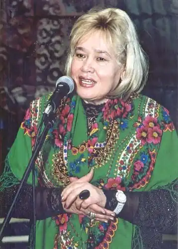

Ганна Чубач
Чубач Ганна Танасівна народилася 6 січня 1941 року в с. Плоске на Вінниччині. Закінчила Український поліграфічний інститут ім. Івана Федорова (1968) та Вищі літературні курси при Літінституті ім. Максима Горького (1973). Працювала в редакціях газети "Літературна Україна" та журналу "Дніпро".
Авторка збірок "Журавка" (1970), "Жниця" (1974), "Ожинові береги" (1977), "Заповіти землі" (1978), "Срібна шибка" (1980), "Святкую день" (1982), "Житня зоря" (1983), "Листя в криниці" (1984), "Літо без осені" (1986).